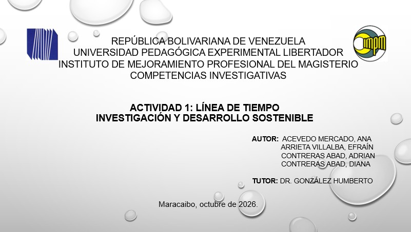

Veintiún hitos que explican cómo el mundo pasó de la cuestión social a los compromisos ambientales globales. Cada evento incluye un video para profundizar.
El desarrollo sostenible no es un lujo que podamos elegir o rechazar; es una exigencia ineludible de la supervivencia humana y la única estrategia viable para garantizar la prosperidad económica con dignidad, equidad y respeto absoluto por la casa común que habitamos.